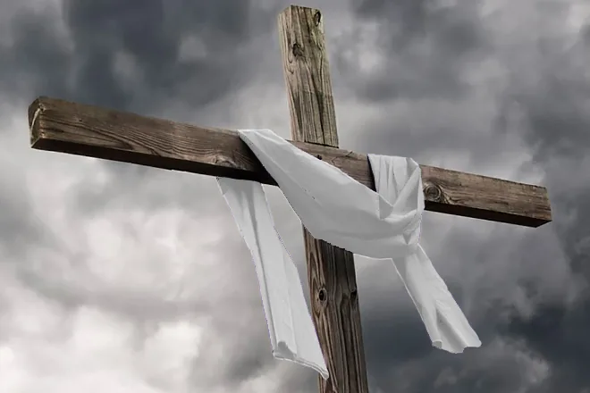

A Paróquia São José está presente na comunidade Lúcio Costa desde 1996. No início era apenas uma capela onde eram celebradas as missas, mas com o passar do tempo se tornou um belíssimo templo de Deus.
Um belíssimo templo de Deus para atender a comunidade da região e quem se sentir convidado a conhecer.
A Paróquia São José está presente na comunidade Lúcio Costa desde 1996. No início era apenas uma capela onde eram celebradas as missas, mas com o passar do tempo se tornou um belíssimo templo de Deus para atender a comunidade da região e quem se sentir convidado a conhecer.

A capela foi colocada sob a proteção de São José Operário, pois desde o dia de São José de 1986, era o Pe. José quem rezava a missa dominical e era Dom José Falcão, o pastor da Arquidiocese.
No dia 11 de novembro de 1988, foi realizada a entrega do terreno na Localidade Lúcio Costa para a construção da capela. Na ocasião estavam presentes o Governador do Distrito Federal, Joaquim Roriz, o Cardeal Dom José Falcão, o pároco da Paróquia São Paulo Apóstolo – Guará I (PSPA), Pe. João Bonetto, o Vigário, Pe. José Perona e poucas pessoas da comunidade, pois chovia muito naquele dia.
A ideia era que fosse construído um grande templo, mas diante das dificuldades enfrentadas na época, a construção de um galpão e a efetuação das escavações para o início do trabalho só começou em 1990.
O Galpão só foi inaugurado em 27 de agosto de 1991, com a ajuda de serestas, rifas, campanhas, doações e principalmente com a ajuda da Paróquia São Paulo Apóstolo. A antiga planta da igreja foi uma doação do Sr. Jeovat Mendes, no qual, com muita dedicação, dirigiu também a parte técnica dos trabalhos.
A Paróquia São José passa a estar presente na comunidade Lúcio Costa, crescendo junto com os fiéis. Em seu início a igreja contava apenas com a catequese e com um grupo jovem.
Em 2021 foram comemoradas as Bodas de Prata da paróquia (25 anos), com eventos e comemorações em agradecimento à Paróquia São José, por todos os serviços que já foram e que ainda são prestados à comunidade.
“Existem pastorais para crianças, jovens e adultos, para que ninguém fique de fora.”Paróquia São José · Comunidade Lúcio Costa
De uma pequena capela a um belíssimo templo de Deus a serviço da comunidade Lúcio Costa.
Hoje a Paróquia São José tem mais de 20 pastorais, grupos e movimentos, nos quais a comunidade é convidada a participar onde se sentir chamada.
As Bodas de Prata marcaram 25 anos de serviços prestados à comunidade, em agradecimento a todos que fazem parte desta história.
As missas eram celebradas às 10 da manhã pelo Pe. José, mas a comunidade ainda era pequena e, para que mais pessoas pudessem participar da sagrada eucaristia, os horários foram ampliados ao longo dos anos.